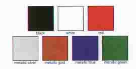

- Mirrors Some /5s have just one, some have two. Mirrors don't have to be the same length, either. When new, the /5 came with one mirror on the left. If it had US bars, it had a short mirror. The long mirrors are for European style bars, which don't have as much rise as the US bars. Both types of mirrors are still available.
- Side Reflectors The U.S. Department of Transportation requires these before a motorcycle can be imported. Other countries don't require them. These reflectors can be removed. 1972 and later models had these on headlight ears and license plate brackets.
- Turn Signal Mounted Side Reflectors 1971 and earlier /5s had smaller reflectors mounted on turnsignals.
- Battery Covers BMW provided either blue or black stripes on the chrome panels for the fuel tank and the chrome battery covers. If blue, they may have been on a Monza Blue /5. Black stripes on tank panels and battery colors were used with other colors. There is no rhyme or reason to battery covers. If your bike has tabs on the frame to hold the battery covers, then your bike (or at least that part of your bike) is from 1972 or 1973. The factory supplied little rubber bungie cords to hold the battery covers on to the bike. Age and exposure to battery acid wears out these things relatively quickly. An easy fix to use a door spring from the hardware store.
- Taillight On /5s, the rear taillight has a circle in it. Later taillights will fit, but they won't have the circle. List member Tony Toglia found out this tidbit while hanging around Bob's BMWs, a motorcycle shop in Jessup, Maryland.
- Seat badges Only R75/5 owners have seat badges.
- Seat rails There are two styles. This Toaster has the one-piece wrap around the seat kind, as seen in 1972 and 1973. The other kind has one rail on each side of the motorcycle, as seen in 1970 and 1971. Aftermarket backrests were available in place of the rails.
Colors According to the 1972 sales brochure, the /5 was available in the following seven colors in the US. Paint codes can be found on the Colors page.
